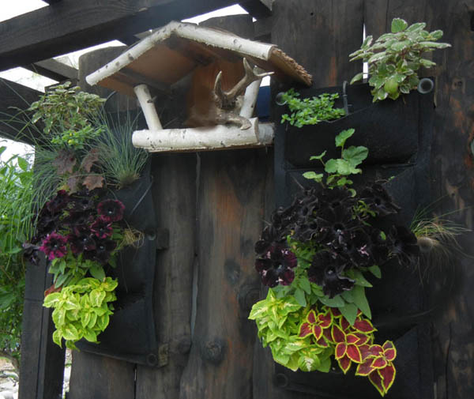
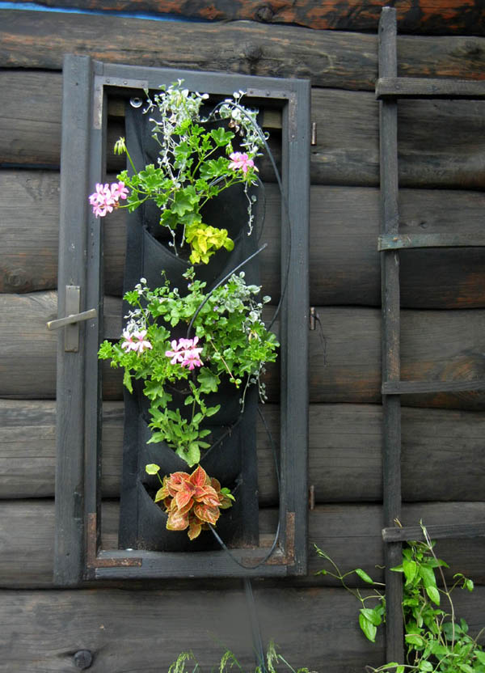
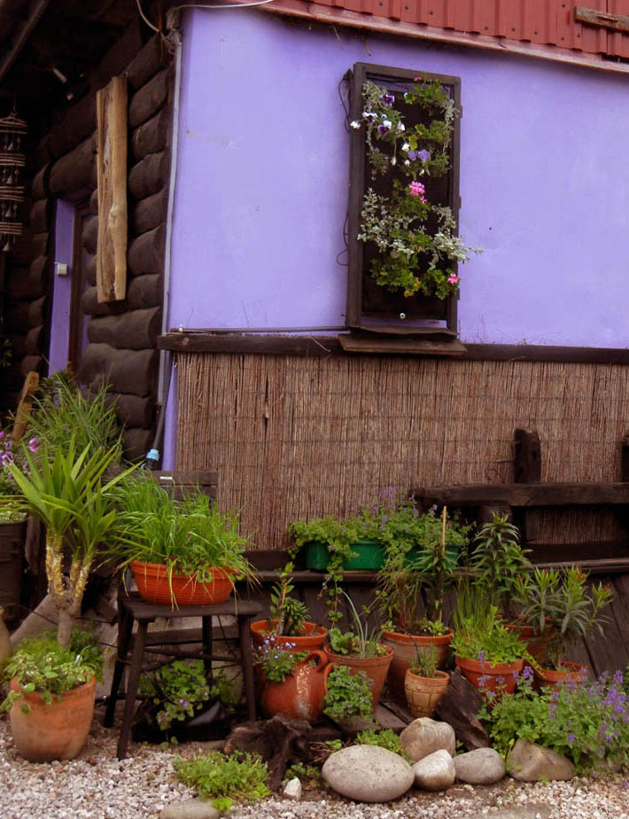
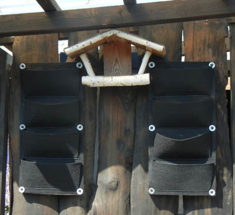
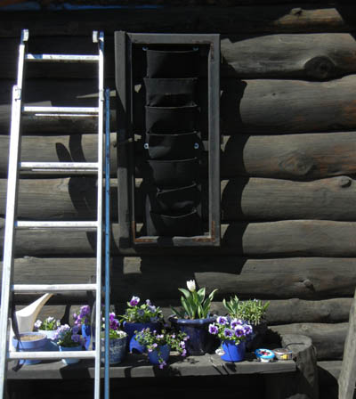
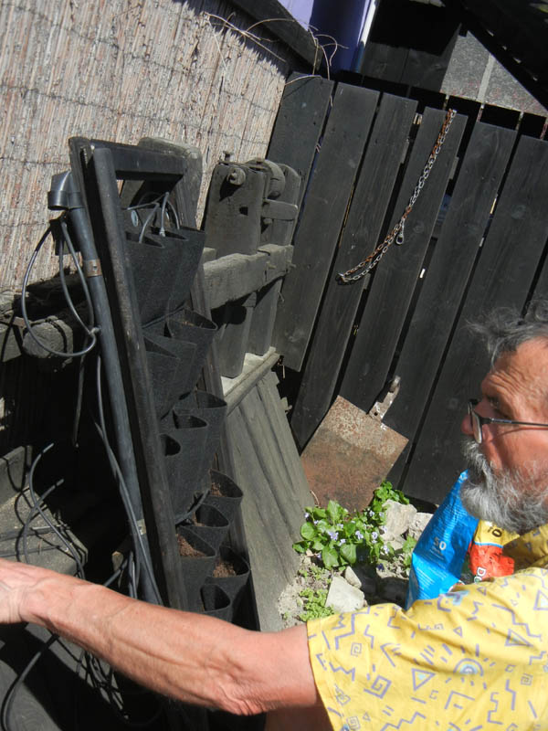
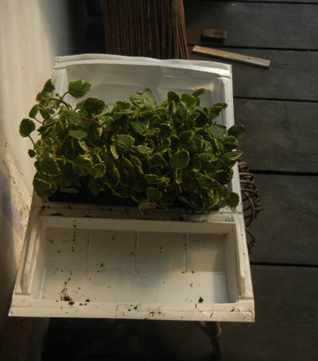
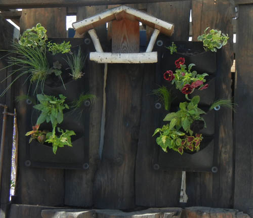
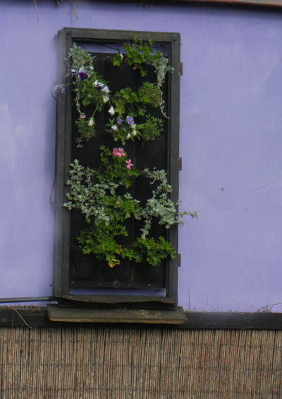

Od pewnego czasu ciekawią mnie wiszące ogrody. Te zewnętrzne i w niewielkiej skali. Postanowiłam urządzić je u siebie. Na początek trzy: dwa pojedyncze i jeden podwójny. Przygotowałam się do tego przedsięwzięcia już zimą. Zamówiłam w Państwie Środka odpowiednie kieszenie. Przyszły po miesiącu, ale przecież nie spieszyło mi się, bo był styczeń.
Wiosną przy pomocy męża i różnych urządzeń powiesiłam kieszenie na ścianach. Dwie z nich umieściłam w ramach starych okien. Pomalowałam je na czarno. Kolejnym etapem było zamontowanie nawodnienia i podłączenia go do komputera sterującego polewanie w tej części ogrodu. Zdecydowałam się na kapilary z reduktorem, bo bez niego woda błyskawicznie wylewała się z kieszeni.
Sadzonki zamówiłam u producenta. Chciałam, by wszystkie były z jednego źródła i w początkowej fazie wzrostu. Co prawda nie uzyskałam w ten sposób natychmiastowego efektu, ale za to roślinki mają czas na przystosowanie się do nowych warunków.
Zaletą tej decyzji jest i to, że będą dłużej zdobiły ścinę i nie trzeba ich będzie w połowie lata wymieniać.
Potem obmyślałam nasadzenia. To był najtrudniejszy etap, bo dwa moje roślinne obrazy są w nasłonecznionym miejscu, a jeden, podwójny, w cienistym. Chciałam, by dominowały ozdobne liście i trawy, a kwiaty nieco tylko ożywiały kompozycję.
Niestety, nie mam talentu do komponowania barw i kształtów, dlatego wyszło jak wyszło, ale to mój pierwszy wiszący ogródek, więc cieszę się nim bardzo.
Rośliny, jakie wykorzystałam, to: dichondra srebrzysta, czarna petunia, kocanki włochate, koleus, pelargonie wiszące, ostnica cieniutka, kostrzewa sina, batat, żuraweczka, komarzyca, żurawka oraz przejściowo bratki.
Najwięcej obiecuję sobie po dichondrze, bo już prezentuje się pięknie i dostojnie. A to początek maja dopiero.








